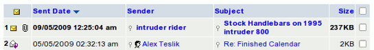

| Your Inbox is where all your messages are downloaded to, unless you have otherwise specified (see
Setting up Filters
to learn about redirecting e-mail). When someone sends you an email, it is displayed in a list fashion:

The first column represents the status of the message. The
golden, closed envelope specifies that the message has not been read.
Notice that all of the text in that row (of the first message) is also
bolded. Next to the envelope there is a paperclip ( ) which means that an Attachment was added to your email. The envelope in the second message row is white and opened.
This means that you have read that message. Also take note that the
text in the second message row is in plain format (not bolded). You can
change the status of the message by clicking the envelope next to the
message you wish to change. If the status is Read, it will be changed to Unread, and vice-versa.
The second column is the Date of which you received the e-mail. The date format, in this case, is DD/MM/YY (see
Configuring Display Settings
to learn how to change the date format). It also tells you the time at which you received the message. In this case, it is in a 24-hour format. This can be changed in the
Display Settings Configuration
.
The Sender is who the email is from. You can click the name to compose a message to that person (see
Message Composition
).
The Subject is the topic of which the sender had specified.
This gives you a brief, explanatory meaning of the message. By clicking
the Subject of the message, you will be redirected to that message. For
example, if a user clicked Stock Handlebars on ... (see above diagram), he/she would be redirected to that message, and be able to read the message, in full.
The Size of the message is the virtual size that the message takes up on the server. This is reported for rather small messages in
Bytes,otherwise in Kilobytes (KB).
The Checkbox in the last column is for message selection and
actions. By clicking one of the checkboxes, a small Checkmark will
appear in the box. Clicking it again removes the checkmark. By clicking
the checkbox utmost to the top (directly right of "Size"), all of the
checkboxes below it will be selected. This tool is for performing
actions on selected messages. More will be discussed on this topic in
Using the Toolbar.
What has not been mentioned are the 2 small Search icons in the sender and the subject field. Clicking on ( ) will
activate a search for all the emails with the same subject in the
current folder. Idem for the name/address of the sender. If there's a (
) beside
the sender's address then that name already exists in your Address
Book. By clicking it takes you directly to that particular name in the
address book's Listview.
|